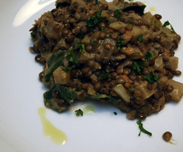

Linsensalat
5,5 von 6Eine Karotte, 1/2 Lauch, etwas Stangensellerie, einige Mangoldstiele und eine Zwiebeln 10 min bei mittlerer Hitze in Olivenöl anschwitzen. 300 Gramm Linsen, 5 Dl Bouillon, Thymian dazu geben. Nach 10 min einige kleine Kartoffelwürfel dazu geben. Unter gelegentlichem Rühren köcheln lassen bis die Linsen gar sind (ca. 30 min). In den letzten 5 min die Mangoldblätter unter die Linsen rühren und zusammenfallen lassen. Mit Rotweinessig und Salz, Pfeffer abschmecken. Mit etwas Sauerrahm servieren.
